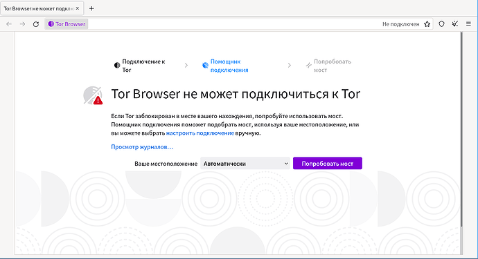

Support
Censorship Circumvention
Здравствуйте! C декабря 2021 года интернет-провайдеры в России блокируют Tor. Браузер Tor включает инструменты для обхода этих блокировок. Например, вы можете воспользоваться Snowflake, мостами obfs4 или новым мостом WebTunnel. “Зеркала” нашего...
Reading time: 9 mins 🕑
Likes: 119 ❤